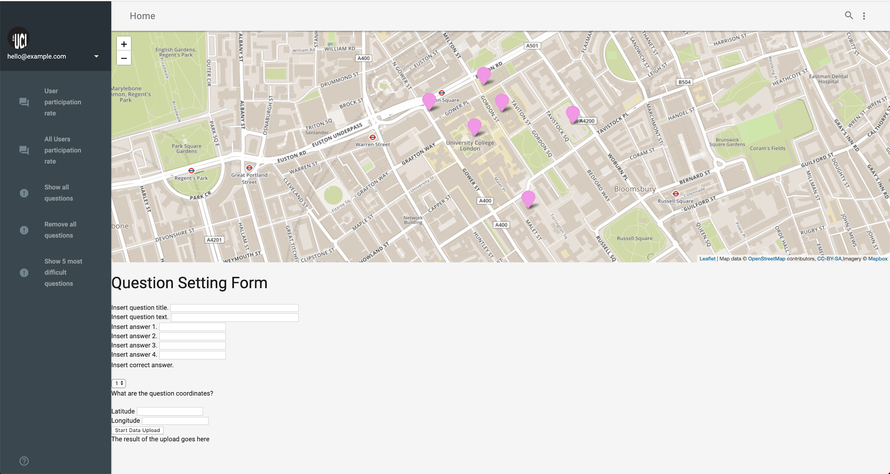
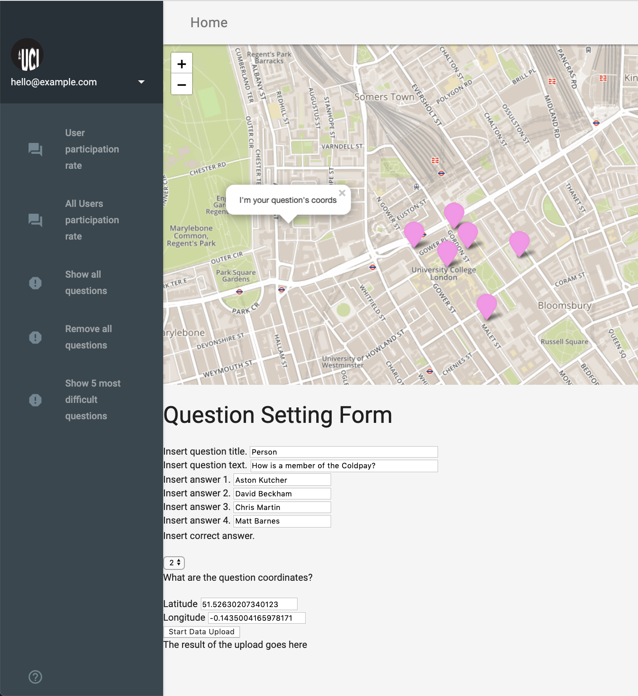
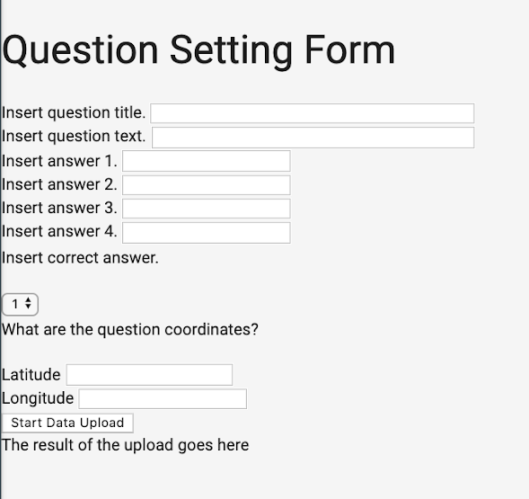
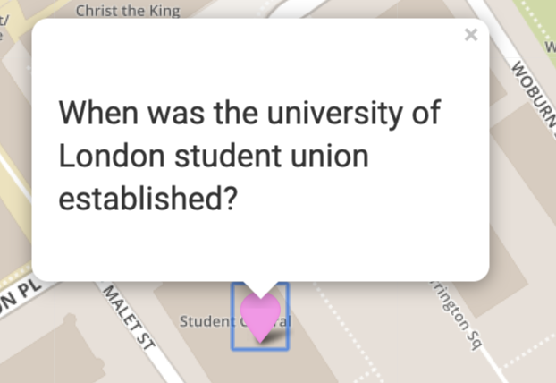
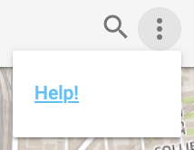
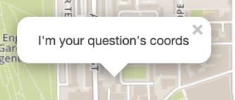

The initial screen displays the map on top with some quiz point as pink markers. A menu is located on the left (see section Page feature ) and a help button is located on the top right menu (Fig 1).

Figure 1: Shows empty question form.
First, click on the map pointing a the desired location where the question point will be located. A pop-up message stating “I’m your question’s coords” (see section Page feature) will display confirming that the coordinates for the point are automatically filled into the Latitude and Longitude field. The user should proceed by filling in all the empty fields making sure that none is left empty(see section App functionalities ) (Fig 2). Once the message, “row inserted is displayed” below “The result of the upload goes here” it confirms that the point was successfully inserted into the database.

Figure 2: Shows how to fill in the question form.
The question form has six elements (Figure 3) (question title, question text, answer 1-4, correct answer, latitude and longitude). Each element function is described as followed:
Question title: describes the type of question (e.g. University, Statue and Place);
Question text: describes the question to be as to the user;
Answer (1-4): are the answer options given to the user;
Correct answer: Gives a number from 1-4 for that is indexed to each answer from 1-4. For example, if the correct answer for a question is inserted in answer 2 the index number in the correct answer will be 2 and so on.
Latitude: describes the latitude of the location of where the question point is going to be located. Can be added manually or by clicking on the map.
Longitude: describes the latitude of the location of where the question point is going to be located. Can be added manually or by clicking on the map.

Figure 3: shows the different elements of the question form.
Menu-based options are composed of five functionalities (Figure 4) that are described as follow:
User participation rate: shows the daily user participation in bar graph colour in two colours (Great showing questions answered and red correct number of questions attempted) ;
All Users participation rate: shows the daily participation of all users in bar graph colour in two colours (Great showing questions answered and red correct number of questions attempted) ;
Show all questions: displays all questions added by any users on the map.
Remove all questions: removes all questions added by any users and return to only the questions added by the user.
Show 5 most difficult questions: shows the five hardest questions added by any user next to the user’s current location.
Figure 4: shows functionalities in the left menu and their resulting events(right side).
|
Features |
Function |
|
Zooming in and out of the map |
|
|
Marker illustrating a question point on the map |
|
|
 |
Pop-up message showing the question associated with the marker. |
|
 |
Button to access user guide. |
|
 |
Pop-up message that opens once the user has clicked the map to set the quiz point location. It also retrieves the point coordinates and fills in the latitude and longitude field. |